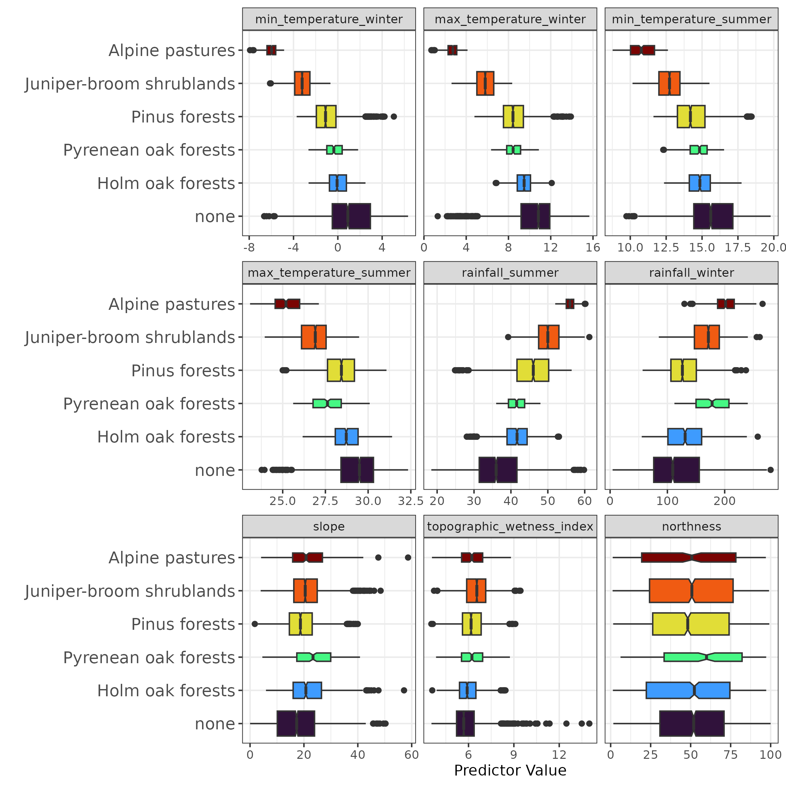
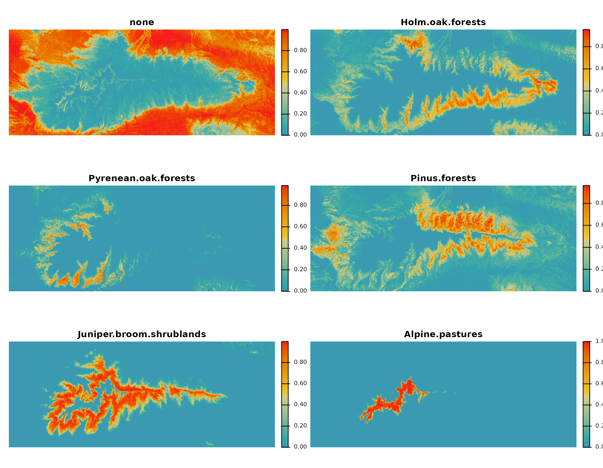
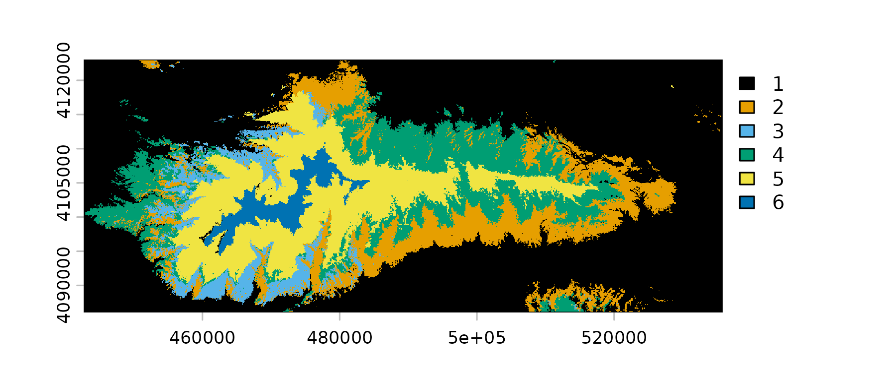
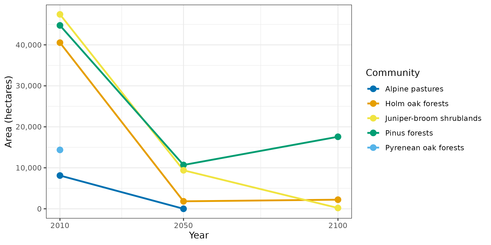

Overview
The communities dataset contains plant community records
from the Sierra Nevada mountain range in SE Spain. The
data was compiled from the official vegetation map at 1:10,000 scale. It
is designed to support multi-class classification, binary
presence-absence modelling, and ecological niche analysis using climate
and topographic predictors.
Its main features are:
- Scope: 7,300 point records covering the Sierra Nevada mountain range (SE Spain, EPSG:25830).
-
Multi-class and binary responses: a
communitycolumn with 6 levels ("none"+ 5 named plant communities) and 5 binary presence-absence columns for individual community types. - Climate and topographic predictors: 9 numeric predictors spanning seasonal temperature extremes, rainfall, and terrain attributes.
- Temporal climate scenario rasters: associated rasters for baseline (2010), 2050, and 2100 climate scenarios are available via download functions.
Setup
The code below loads the R packages and example data
required for this tutorial.
The following R libraries and example data are required to run this tutorial.
library(dplyr)
library(tidyr)
library(sf)
library(mapview)
library(terra)
library(ggplot2)
library(ranger)
library(collinear)
library(spatialData)
data(
communities,
communities_responses,
communities_predictors,
package = "spatialData"
)
communities_colors <- grDevices::palette.colors(
n = length(levels(communities$community))
) |>
stats::setNames(
levels(communities$community)
)
env_colors <- grDevices::hcl.colors(
n = 100,
palette = "Zissou 1"
)Data Structure
The dataset is an sf data frame with 6747 rows and 16
columns. The first 10 records (geometry dropped) are shown below.
communities |>
sf::st_drop_geometry() |>
head(10) |>
dplyr::glimpse()
#> Rows: 10
#> Columns: 15
#> $ pyrenean_oak <dbl> 1, 1, 1, 1, 1, 1, 1, 1, 1, 1
#> $ juniper_shrubland <dbl> 0, 0, 0, 0, 0, 0, 0, 0, 0, 0
#> $ pinus_forest <dbl> 0, 0, 0, 0, 0, 0, 0, 0, 0, 0
#> $ alpine_pastures <dbl> 0, 0, 0, 0, 0, 0, 0, 0, 0, 0
#> $ holm_oak <dbl> 0, 0, 0, 0, 0, 0, 0, 0, 0, 0
#> $ community <fct> Pyrenean oak forests, Pyrenean oak forests, …
#> $ max_temperature_summer <dbl> 28.88643, 28.50699, 28.25909, 28.50201, 28.0…
#> $ max_temperature_winter <dbl> 9.457385, 8.020030, 7.829192, 7.315129, 7.34…
#> $ min_temperature_summer <dbl> 13.15320, 16.14400, 15.84599, 15.66309, 15.6…
#> $ min_temperature_winter <dbl> -1.49025047, 0.11102799, -0.06090841, -0.615…
#> $ northness <dbl> 68.19292, 26.15096, 42.63157, 27.40485, 31.7…
#> $ rainfall_summer <dbl> 41.79313, 43.88976, 44.59952, 45.00000, 45.5…
#> $ rainfall_winter <dbl> 193.7088, 196.4996, 221.5068, 193.7104, 210.…
#> $ slope <dbl> 30.84319, 27.24990, 36.85854, 27.38869, 34.1…
#> $ topographic_wetness_index <dbl> 5.126790, 6.500056, 4.380448, 5.770209, 7.54…The dataset contains 6 response variables (named in
communities_responses):
| Variable | Type | Description |
|---|---|---|
community |
factor (6 levels) | Multi-class community label: one of 5 named community types, and
"none" to represent absence of the target communities |
pyrenean_oak |
binary integer | Presence (1) / absence (0) of Pyrenean oak forests |
juniper_shrubland |
binary integer | Presence (1) / absence (0) of juniper-broom shrublands |
pinus_forest |
binary integer | Presence (1) / absence (0) of Pinus forests |
alpine_pastures |
binary integer | Presence (1) / absence (0) of alpine pastures |
holm_oak |
binary integer | Presence (1) / absence (0) of holm oak forests |
You can use the binary responses for presence-absence modelling, or
community for multi-class classification.
The overall number of samples per community type is shown below. The
none community refers to samples with absences for all
communities.
communities |>
sf::st_drop_geometry() |>
dplyr::group_by(community) |>
dplyr::summarize(
samples = dplyr::n()
)
#> # A tibble: 6 × 2
#> community samples
#> <fct> <int>
#> 1 none 2028
#> 2 Holm oak forests 847
#> 3 Pyrenean oak forests 228
#> 4 Pinus forests 1589
#> 5 Juniper-broom shrublands 1789
#> 6 Alpine pastures 266The map below shows all records coloured by
communities$community.
mapview::mapview(
communities,
zcol = "community",
layer.name = "community",
col.regions = communities_colors,
color = NULL
)The dataset contains 9 numeric predictors (named in
communities_predictors) covering two categories:
| Variable | Category | Description |
|---|---|---|
max_temperature_summer |
Climate | Maximum summer temperature (°C) |
max_temperature_winter |
Climate | Maximum winter temperature (°C) |
min_temperature_summer |
Climate | Minimum summer temperature (°C) |
min_temperature_winter |
Climate | Minimum winter temperature (°C) |
rainfall_summer |
Climate | Summer rainfall (mm) |
rainfall_winter |
Climate | Winter rainfall (mm) |
northness |
Topography | Northness index (cosine of aspect, −1 to 1) |
slope |
Topography | Terrain slope (degrees) |
topographic_wetness_index |
Topography | Topographic wetness index |
The communities dataset also has associated
environmental rasters for present and future climate scenarios. These
raster layers can be downloaded using the dedicated functions shown
below.
communities_2010 <- spatialData::communities_extra_2010()
communities_2050 <- spatialData::communities_extra_2050()
communities_2100 <- spatialData::communities_extra_2100()These functions download the data as multi-band GeoTIFF files. The
files are loaded into R as spatRaster objects, managed by
the R package terra. The
plot below shows communities_2010.
plot(
x = communities_2010,
col = env_colors
)
Example Usage
In this example we model the spatial distribution of plant communities in Sierra Nevada via Random Forest classification, and project the model across the 2010 baseline and the 2050 and 2100 future climate scenarios.
Model Training
We are going to train a probability random forest model with ranger::ranger().
This type of model returns the probability of a case to belong to each
class.
To ensure that we give each class in community equal
influence, we use collinear::case_weights()
to assign inverse-frequency case weights per community, so that rare
communities are up-weighted relative to common ones.
communities_model <- ranger::ranger(
dependent.variable.name = "community",
data = communities |>
sf::st_drop_geometry() |>
dplyr::select(
dplyr::all_of(
c("community", communities_predictors)
)
),
probability = TRUE,
importance = "permutation",
num.trees = 500,
min.node.size = 30,
seed = 1,
case.weights = collinear::case_weights(
x = communities$community
)
)The model output is a list of class ranger containing
several objects of interest.
names(communities_model)
#> [1] "predictions" "num.trees"
#> [3] "num.independent.variables" "mtry"
#> [5] "min.node.size" "variable.importance"
#> [7] "prediction.error" "forest"
#> [9] "splitrule" "treetype"
#> [11] "call" "importance.mode"
#> [13] "num.samples" "replace"
#> [15] "dependent.variable.name" "max.depth"The three most relevant output objects are described below:
-
predictions: Holds the out-of-bag class probabilities. Each prediction is generated by the trees that were not trained on that observation. These predictions help assess model performance in a way that is not as rigorous as spatial cross-validation, but is sufficient for our purposes here.
head(communities_model$predictions)
#> none Holm oak forests Pyrenean oak forests Pinus forests
#> [1,] 0.00000000 1.00000000 0.0000000 0.00000000
#> [2,] 0.14285714 0.44642857 0.2142857 0.19642857
#> [3,] 0.02876984 0.03174603 0.7227183 0.21676587
#> [4,] 0.14792009 0.09908662 0.3230706 0.36191502
#> [5,] 0.02500000 0.08000000 0.7681034 0.12689655
#> [6,] 0.06604938 0.05000000 0.4246589 0.01754386
#> Juniper-broom shrublands Alpine pastures
#> [1,] 0.00000000 0
#> [2,] 0.00000000 0
#> [3,] 0.00000000 0
#> [4,] 0.06800766 0
#> [5,] 0.00000000 0
#> [6,] 0.44174789 0-
prediction.error: The Brier score of the model, representing the mean squared error between predicted probabilities and actual outcomes.
communities_model$prediction.error
#> [1] 0.2146029-
variable.importance: Permutation importance of each predictor, expressed as the increase in model error on the out-of-bag data when the predictor is permuted. Important predictors show higher scores.
#permutation importance
communities_model$variable.importance |>
sort() |>
rev() |>
round(digits = 3)
#> max_temperature_winter min_temperature_winter rainfall_summer
#> 0.159 0.120 0.107
#> rainfall_winter max_temperature_summer min_temperature_summer
#> 0.064 0.059 0.057
#> slope northness topographic_wetness_index
#> 0.017 0.011 0.003These scores represent how well a predictor helps the model discriminate between categories from a statistical standpoint rather than from an ecological one.
Model Assessment
This model has a Brier score of 0.215, which is reasonably good, indicating that the model is producing well-calibrated class probabilities.
However, this score says nothing about per-class performance. To understand how well the model predicts each class, we first need to transform the out-of-bag class probabilities to class predictions.
The code below extracts the name of the column in
communities_model$predictions with the highest probability
per observation, and prints the first cases.
#case index of the column with the maximum probability
max_probability_column <- max.col(communities_model$predictions)
#name of the column with the maximum probability
predicted_class <- colnames(communities_model$predictions)[max_probability_column]
head(predicted_class)
#> [1] "Holm oak forests" "Holm oak forests"
#> [3] "Pyrenean oak forests" "Pinus forests"
#> [5] "Pyrenean oak forests" "Juniper-broom shrublands"Now we use the observed and predicted data to build a confusion
matrix showing model performance per class in
community.
#generate confusion matrix
confusion_matrix <- table(
#WARNING! if factor, must be converted to character!
observed = as.character(communities$community),
predicted = predicted_class
) |>
as.matrix()
#abbreviate dimension names
colnames(confusion_matrix) <-
rownames(confusion_matrix) <-
abbreviate(
colnames(confusion_matrix),
minlength = 8
)
confusion_matrix
#> predicted
#> observed Alpnpstr Hlmokfrs Jnpr-brs none Pnsfrsts Pyrnnokf
#> Alpnpstr 260 0 5 1 0 0
#> Hlmokfrs 0 628 3 39 105 72
#> Jnpr-brs 31 1 1595 2 153 7
#> none 27 185 127 1452 159 78
#> Pnsfrsts 0 240 158 98 1032 61
#> Pyrnnokf 0 35 10 13 11 154Below, we use the diagonal of the confusion matrix to compute the model’s overall recall (sensitivity or true positive rate)…
…and the matrix rows to compute the per-class recall.
sapply(
X = colnames(confusion_matrix),
FUN = function(x){
confusion_matrix[x, x] / sum(confusion_matrix[x, ])
}
) |>
sort() |>
round(digits = 3)
#> Pinus forests Pyrenean oak forests none
#> 0.649 0.691 0.716
#> Holm oak forests Juniper-broom shrublands Alpine pastures
#> 0.741 0.892 0.977The model achieves above-random recall for all communities, and is particularly accurate at discriminating juniper-broom shrublands and alpine pastures.
Now let’s project the trained model across climate scenarios.
Spatial Predictions
The function terra::predict() applies the trained random
forest model to a SpatRaster object whose layers share the
same predictor names and units used during training.
probabilities_2010 <- terra::predict(
object = communities_2010,
model = communities_model,
na.rm = TRUE
)
probabilities_2050 <- terra::predict(
object = communities_2050,
model = communities_model,
na.rm = TRUE
)
probabilities_2100 <- terra::predict(
object = communities_2100,
model = communities_model,
na.rm = TRUE
)The output has one probability layer per class.
plot(
probabilities_2010,
nc = 2,
axes = NULL,
col = env_colors
)
To transform these probabilities into class predictions, we applyterra::which.max() to retrieve the index of the layer with
the maximum probability.
prediction_2010 <- terra::which.max(
x = probabilities_2010
)
prediction_2050 <- terra::which.max(
x = probabilities_2050
)
prediction_2100 <- terra::which.max(
x = probabilities_2100
)The output of a prediction is a raster in which each pixel’s value is the index of the layer with the maximum predicted probability.
plot(
x = prediction_2010,
col = communities_colors
)
To facilitate the plotting of these categorical maps, first we add
category names via terra::categories() and a categories
data frame, and second we add specific colors per category using
terra::coltab().
#categories dataframe
communities_categories_df <- data.frame(
ID = seq_along(communities_colors),
category = levels(communities$community)
)
#colors dataframe
communities_colors_df <- data.frame(
value = seq_along(communities_colors),
col = communities_colors
)
#assign categories
levels(prediction_2010) <- communities_categories_df
levels(prediction_2050) <- communities_categories_df
levels(prediction_2100) <- communities_categories_df
#assign colors
terra::coltab(prediction_2010) <- communities_colors_df
terra::coltab(prediction_2050) <- communities_colors_df
terra::coltab(prediction_2100) <- communities_colors_dfLet’s take a look at the resulting maps.
terra::plet(prediction_2010)
terra::plet(prediction_2050)
terra::plet(prediction_2100)Let’s transforme these pixels into a plot to get a better picture of changes in habitat suitability for each plant community.
#resolution is 100x100 meters = 1 ha per cell
communities_area_df <- dplyr::bind_rows(
terra::freq(prediction_2010) |> dplyr::mutate(year = 2010),
terra::freq(prediction_2050) |> dplyr::mutate(year = 2050),
terra::freq(prediction_2100) |> dplyr::mutate(year = 2100)
) |>
dplyr::rename(community = value) |>
dplyr::mutate(hectares = count) |>
dplyr::select(year, community, hectares) |>
dplyr::filter(community != "none")
ggplot2::ggplot(
data = communities_area_df,
ggplot2::aes(
x = year,
y = hectares,
colour = community,
group = community
)
) +
ggplot2::geom_line(linewidth = 1) +
ggplot2::geom_point(size = 3) +
ggplot2::scale_colour_manual(values = communities_colors) +
ggplot2::scale_x_continuous(breaks = c(2010, 2050, 2100)) +
ggplot2::scale_y_continuous(labels = scales::comma) +
ggplot2::labs(
x = "Year",
y = "Area (hectares)",
colour = "Community"
) +
ggplot2::theme_bw()
Rather than actual community surface at a given time, these curves can be interpreted as a proxy for climatic stress: the smaller the community’s predicted area with respect to the initial area, the higher the climate stress the community may undergo.
We can also obtain a proxy for community transitions by assessing the fraction of the original area of each community that will become suitable for another community.
#stack together projections for 2010 and 2100
communities_transition_df <- terra::as.data.frame(
x = c(prediction_2010, prediction_2050),
na.rm = TRUE
) |>
setNames(c("communities_2010", "communities_2050")) |>
dplyr::count(
from = communities_2010,
to = communities_2050,
name = "hectares"
) |>
dplyr::group_by(from) |>
dplyr::mutate(
transition_percent = round(
x = hectares * 100 / sum(hectares),
digits = 1
)
) |>
dplyr::select(-hectares) |>
dplyr::ungroup() |>
tidyr::pivot_wider(
names_from = "to",
values_from = "transition_percent",
values_fill = 0
) |>
dplyr::filter(
from != "none"
) |>
dplyr::rename(
Community = from
)
knitr::kable(communities_transition_df)| Community | none | Juniper-broom shrublands | Holm oak forests | Pinus forests | Alpine pastures |
|---|---|---|---|---|---|
| Holm oak forests | 100.0 | 0.0 | 0.0 | 0.0 | 0.0 |
| Pyrenean oak forests | 99.9 | 0.0 | 0.1 | 0.0 | 0.0 |
| Pinus forests | 91.9 | 0.0 | 2.6 | 5.4 | 0.0 |
| Juniper-broom shrublands | 76.2 | 5.0 | 1.3 | 17.4 | 0.0 |
| Alpine pastures | 14.3 | 85.6 | 0.0 | 0.0 | 0.1 |
The transition matrix shows the source community (year 2010) in the first column, the resulting community as columns, and the values represent the percentage of the original area of the source community becoming suitable for a different community in 2050.
For example, most of the area of Alpine pastures transitioning to Juniper-broom shrublands can be interpreted as an indicator of biological pressure. Environmental change may facilitate the upwards migration of Juniper-broom species, resulting in a heightened competition with pastures, leading to the eventual replacement of this community.
Things to Think About
The habitat suitability projections here don’t represent the future reality of the plant communities of Sierra Nevada for at least three reasons:
The future climate data used here is the result of an old climate model running on one of many possible scenarios.
The model used cannot capture many processes that govern vegetation dynamics, including species dispersal limitations, biotic interactions, and community resilience or adaptation.
Random forest cannot predict increased suitability even under improving conditions, unlike parametric models such as GLMs or GAMs.
The communities dataset offers a rich testbed for
multi-class classification and ecological niche modelling in a real
Mediterranean mountain system. The random forest workflow above
demonstrates how a single trained multi-class model can be projected
across climate scenarios, while underscoring the importance of
interpreting such projections with caution.
References
Benito, B., Lorite, J., & Peñas, J. (2011). Simulating potential effects of climatic warming on altitudinal patterns of key species in Mediterranean-alpine ecosystems. Climatic Change, 108, 471–483. https://doi.org/10.1007/s10584-010-0015-3